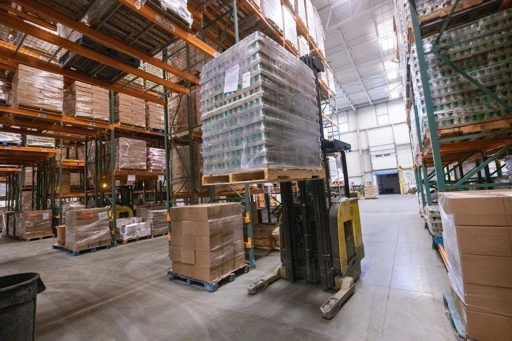

Maskinen kommer med en förare som kan jobbet
Grävmaskiner, hjullastare och kranbilar med egen förare i östra Värmland. Ring före tio, så står maskinen på plats nästa morgon klockan sju.


Vad ska grävas, lastas eller lyftas?
Vad maskinerna gör i höst


Maskiner som håller i trettio år
Vi köper färre maskiner och servar dem längre. Verkstan byter motorer och renoverar hydraulik i stället för att skrota, och alla maskiner tankas med HVO100 från en mack i Kristinehamn sedan 2022.
- 0114 årsnittålder på våra grävmaskiner
- 02HVO100i alla maskiner sedan 2022
- 030allvarliga olyckor sedan 1997


Utbildade förare, inget annat
 01
01Maskinförarbevis från MYN
Alla förare har bevis från Maskinbranschens yrkesnämnd, och tre av dem är godkända instruktörer.
 02
02Arbete på väg
Förarna som kör på kommunens gator har Trafikverkets utbildning för arbete på väg.
 03
03Kranförarbevis
Chaufförerna på kranbilarna har utbildning för lastbilskran och lyft med anslagsdon.
 04
04Byggnads- och Transportavtal
Avtal med Byggnads och Transport, och alla anställda har ID06-kort.
Farfar sa att man hyr ut en förare, inte en maskin. Det har vi aldrig hittat något skäl att ändra på.
Boka en maskin till nästa vecka
Skriv vad som ska göras och var, så ringer Anna upp samma dag.

ÖppettiderMån–fre 6.30–16.30, verkstan till 18